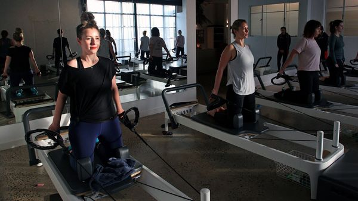
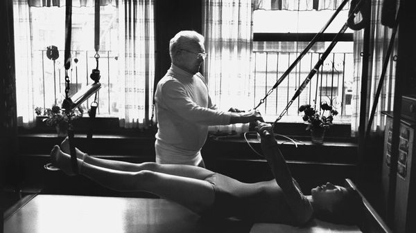

Jul 09, 2026 05:22 AM

ATTENDING A Pilates class means reckoning with your own feebleness. The Reformer machine—a moving carriage attached to various springs and straps—looks rather like a torture device (and, depending on your instructor’s inclination, it can be). The idea is to perform slow, controlled movements such as lunges using springs as resistance; it does not sound too bad. But then, out of nowhere, you are dripping with sweat and your knees are shaking as if you are performing a bad Elvis impersonation.
Perhaps it is cool to be humbled, because Pilates—which can be performed on a mat as well as a machine—is absolutely on fire (emphasis on the abs). It was the fastest-growing workout type worldwide in 2025 on ClassPass, a fitness-session booking platform. Earlier this year Google searches for Reformer Pilates hit an all-time high. On social media videos often go viral—particularly ones of muscly men struggling and cursing through a session.
MMCG, a property consultancy, has estimated that Club Pilates, America’s largest studio franchise, grew from fewer than 50 branches in 2015 to more than 1,100 in 2024. “People are opening Pilates studios the way they opened frozen yogurt places and car washes,” says Maria Leone of Bodyline, a studio in Los Angeles, a city renowned for toned, beach-ready bodies.
This is not to say Pilates is new: in fact, Joseph Pilates (pictured below) opened the first studio in New York in 1926. A German fitness fanatic, he devised the system while interned in a British camp during the first world war. He initially dubbed his exercises, which strengthen muscles but minimise stress on the joints, “Contrology”. Unsurprisingly the name did not stick.

The appeal of Pilates, then and now, is its emphasis on power and flexibility. The rewards of strength training are widely known and this format appeals to women who may not enjoy pumping iron in the gym, reckons Bethan Dando, a Pilates instructor. Its reputation for improving mobility, aiding muscle recovery and strengthening joints also makes it an effective complement to weightlifting, which could explain the rising interest from men. It has been endorsed by athletes including LeBron James, an American basketball player, and George Ford, an English rugby player, who reckon Pilates helps with injury rehabilitation and keeps them supple.
Can the craze stretch further? Jeff Bladt of Playlist, ClassPass’s parent company, says that in some markets supply growth is outpacing that of demand, so a saturation point may be near. Many tremble at the cost: in New York, a single Reformer class will set you back around $50. But the market is not hamstrung yet. Its fans may feel weak, but the Pilates brand is strong. ■